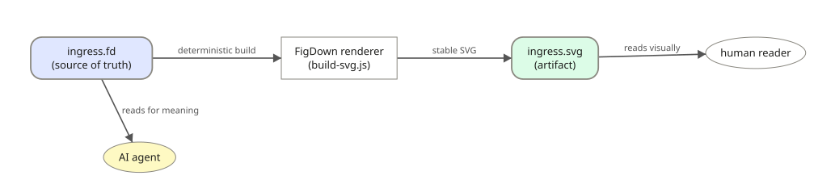

Figures as text in Markdown — one source, two readers.
FigDown is an open standard for describing figures as plain text inside Markdown, so that one source serves two readers who need completely different things from it:
.fd for meaning. Participants,
relationships, containment, field widths, table structure — none of it locked
inside a bitmap.Below is one FigDown document in both of its forms. The picture on the left is what a human reads; the text on the right is what an agent reads. They are the same content, and the picture was rendered from that text by FigDown itself.

# FigDown — figures as text. Spec: https://github.com/FigDown/figdown
figdown 0.1 block
title "One source, two readers"
# A single .fd file is the source of truth.
# It feeds two completely different reading paths:
# (a) deterministic renderer -> SVG artifact -> human
# (b) AI agent reads the .fd directly for meaning
node src "ingress.fd\n(source of truth)" shape=rounded fill=#e0e7ff
node rend "FigDown renderer\n(build-svg.js)"
node svg "ingress.svg\n(artifact)" shape=rounded fill=#dcfce7
node human "human reader" shape=ellipse
node agent "AI agent" shape=ellipse fill=#fef9c3
flow right
rank svg,human
edge src -[deterministic build]-> rend
edge rend -[stable SVG]-> svg
edge svg -[reads visually]-> human
edge src -[reads for meaning]-> agent
layout
pin src at=(20,20)
pin rend at=(330,20)
pin svg at=(615,20)
pin human at=(855,20)
pin agent at=(110,150)source: figures/one-source-two-readers.fd — this figure is FigDown.
.fd and need to read it correctly
The reading contract for language version figdown 0.1, in
read/0.1/: what each construct means, and what you may not infer.
Nothing needs installing — the files are Markdown, the
.fd is text, and reading it requires no renderer, no package and no
network.
spec/.
Every released version keeps one git tag and one archived engine page that is never rewritten, so a figure written today can always be re-rendered exactly as it was. Release v0.1.0: archive/0.1/figdown.html. The editor above tracks the current development state and is not an archive.